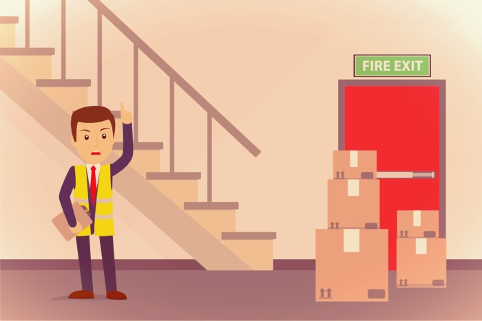

When a fire hits your location, the lives of the people on your grounds and in the surrounding community could be at stake. These are the times when people will look to someone for guidance and direction, and Fire Wardens Can be able to offer this reassuring presence.
Fire Wardens safeguard the safety of your building, making sure everyone is safely evacuated in the event of a fire. Their job is critical, so they are carefully selected and well-trained to do the job.
Each business is required to designate "Fire Warden" to a team player. The square footage of the premises will establish the number of eligible partygoers.
For these staff members, these wardens also serve as reference points during fire emergencies. However, their role in these situations is not just limited to attending to fires; they also need to have many other responsibilities, such as overseeing the company's adherence to the Fire Safety Order 2005.
Although fire wardens are responsible for the safety of buildings, they must also have complete understanding of the workplace's daily workings. They need to be careful to not put their lives at risk when carrying out their tasks.
The duties of a Fire Warden may differ depending on the size, layout and number of staff, but some standard duties could include:

The chosen person or persons should be proficient and go through a preparation course. It is advisable to hire a professional to conduct the training, to ensure that your volunteers get a proper understanding of their roles. Some aspects of the training are done by an industry.
It can include training on the personal procedures of your place of business. It also must ensure that you're picked Experienced Fire Warden and familiar with the kind of workplace or staff.